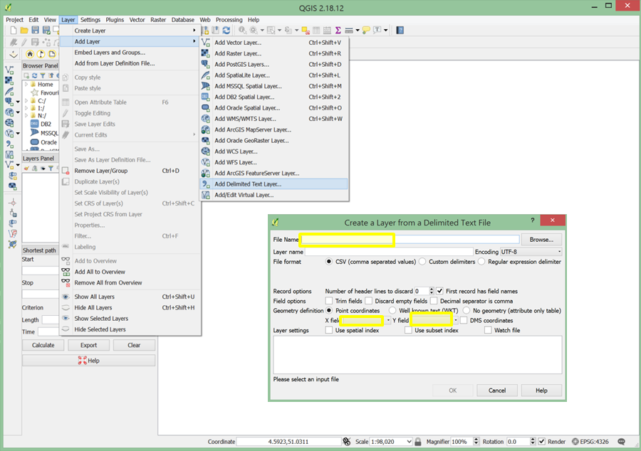
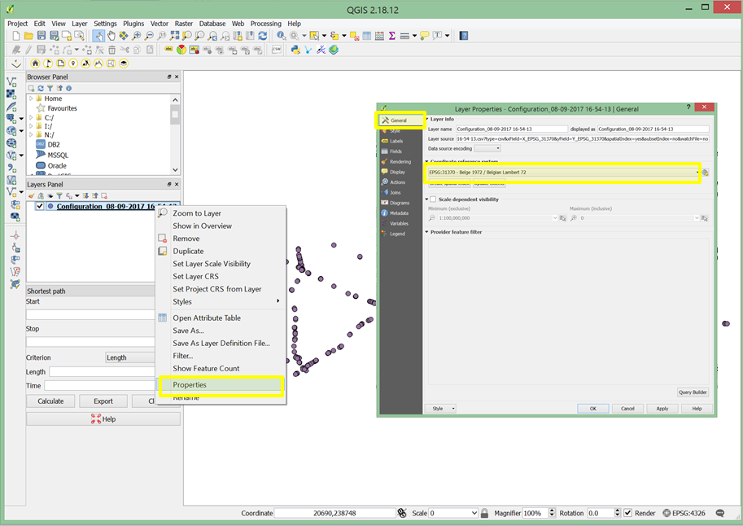

The Road and Traffic Agency and the Flemish Traffic Centre provides data from inductive detection loops on highways in Flanders under an opendata license. The data is updated every minute and containes for each detector station the number of vehicles and the average speeds, divided in 5 vehicle classes, aggregated per minute and the location of the measurement points.
The data is accessible through the webportal of Flanders:
The data and metadata is provided in 4 different machine readable files distributed in two groups:
- Traffic data containing the actual measurements (.xml) and its description (.xsd)
- Location data with the locations of the measurements (.xml) and the configuration (.xsd)
Only the .xml are used to analyse the traffic on the Highway network. The .xsd files are used to validate the data in the .xml files and not further used here.
Visualizing the detectors on a map with QGIS
The .xml file with the location data needs to be transformed to a text file table (.csv) before it is loaded into the mapping software using Matlab and some custom build functions.
>> Load_Location_DataThe QGIS software package is used to map the location data. It is a a free and open source Geographic Information System. The latest image can be downloaded from the webpage.
Import the data as a new Delimited Text Layer and set the X field to X_EPSG_31370 and Y field to Y_EPSG_31370
The coordinate reference system needs to be configured correctly to visualize the data on a map. The X and Y field are configured to the Belgian Lambert 72 projected coordinate system. Find the General tab of the properties window for the layer with the location data and select the CRS with Authority ID EPSG:31370.
In a final step we will add a background to visually locate the detectors on a map of the region. If needed installed the OpenLayers plugin via Plugins -> Manage and Install Plugins...
Select the background web -> OpenLayers plugin -> OpenStreetMap -> OpenStreetMap.
Make sure that the layers are ordered correctly in the Layers Panel. The result should look like the map below.
The final result can be embedded in a web-page like the map above. QGIS has a plugin that automatically generates a Leaflet application within a HMTL file. Select web -> qgis2web -> Create web map. By adding features like popup content or legend in the menu the proper javascripts are added to the HTML file. Note that for every layer in QGIS a json data file is created in the data folder within the designated export directory.
Additional reading and data sources
- Textbook: Mapping in the Cloud
- Opendata portal of Antwerp, Ghent, Brussels
- Opendata portal of the federal government of Belgium
- GTFS feed of Belgian train operator: NMBS
- Request access to Flemish Bus data: De Lijn
- Using API's and databases
- Enhanced data processing
- Creating an interactive dashboard with RStudio and ShinyApp